About Me
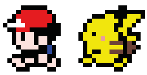______________________________________________________
I am a versatile software engineer adept at swiftly adapting to new coding practices and styles. I excel in leading projects
aimed at implementing flawless, everyday-use features for clients. Additionally, I specialize in training and mentoring developers
to enhance productivity and bolster retention rates.
I have a M.A. in marketing and communications and for the first 4 years of my professional career, I worked as a paralegal.
I wanted to be challenged more, so in my spare time, I started to learn how to code. After learning that I loved to code and wanted
to learn more, I enrolled in the
Galvanize's Full Stack Program
and became a part of the program, it was instantly a perfect fit.
Outside of development, I love playing ultimate frisbee, going for hikes, painting, and drawing.
Currently a Full Stack Developer residing in upstate New York
Projects
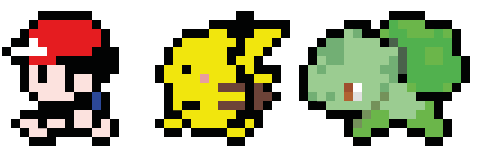___________________________________________________
Galvanize Blog
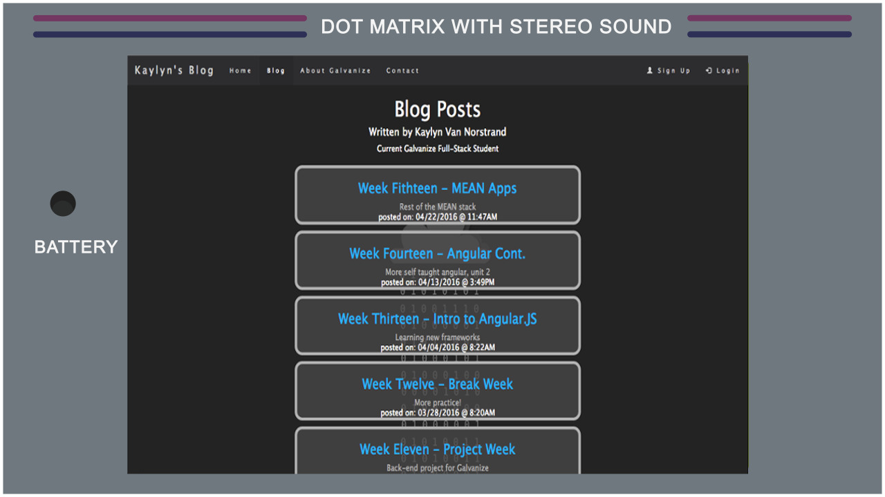
Technical blog written about going through
the Galvanize Full Stack Program, written in MEAN stack.
Movie Mania
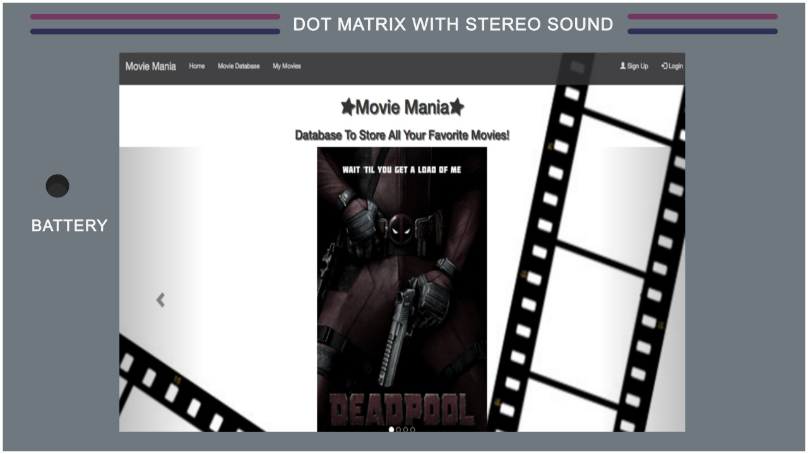
Website created to keep track of movies you rated
and want to see. Modified throughout the entire Galvanize Program. Previously
written in Vanilla JavaScript, currently written in AngularJS with PostgreSQL and OMDB API.
Pokemon Game
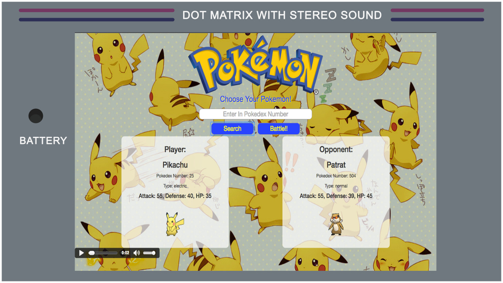
First project at Galvanize, a front-end assignment,
which is a game that mocks a Pokemon battle using the Pokemon API request.
Written in Vanilla JavaScript.
Restaurant App
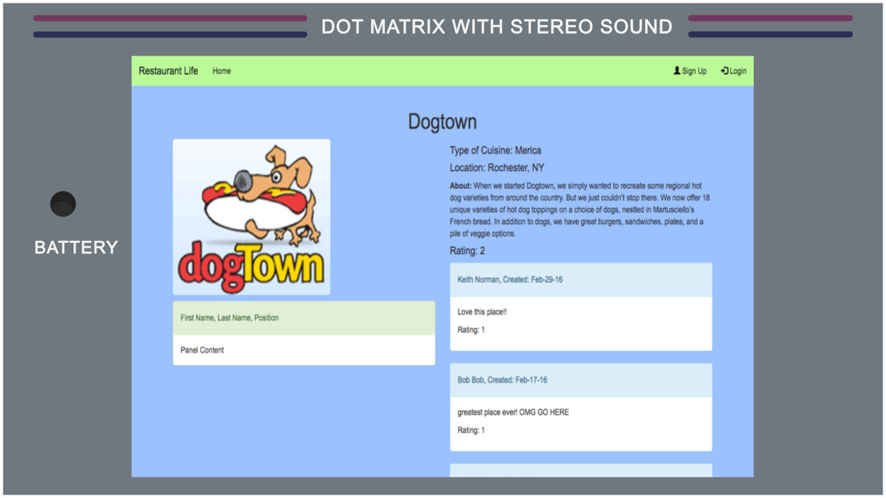
Second project at Galvanize, a back-end assignment,
which is a site that collects and stores data based on restaurants.
Written in Node.js and Express.
Smashtag!
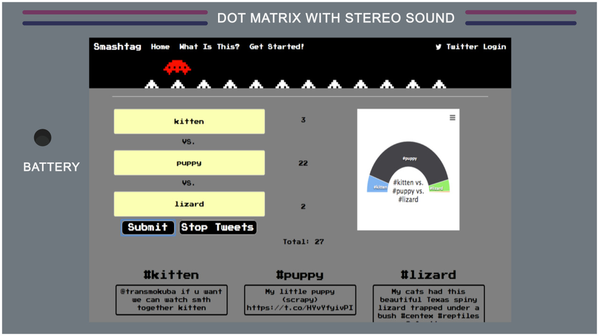
Application that uses the Twitter API in order to graph
out the differences between hashtags. Written in Node.JS and Express,
using the Twitter API, High Charts, and Twitter OAuth.
Not-So-Super Smash Bros.
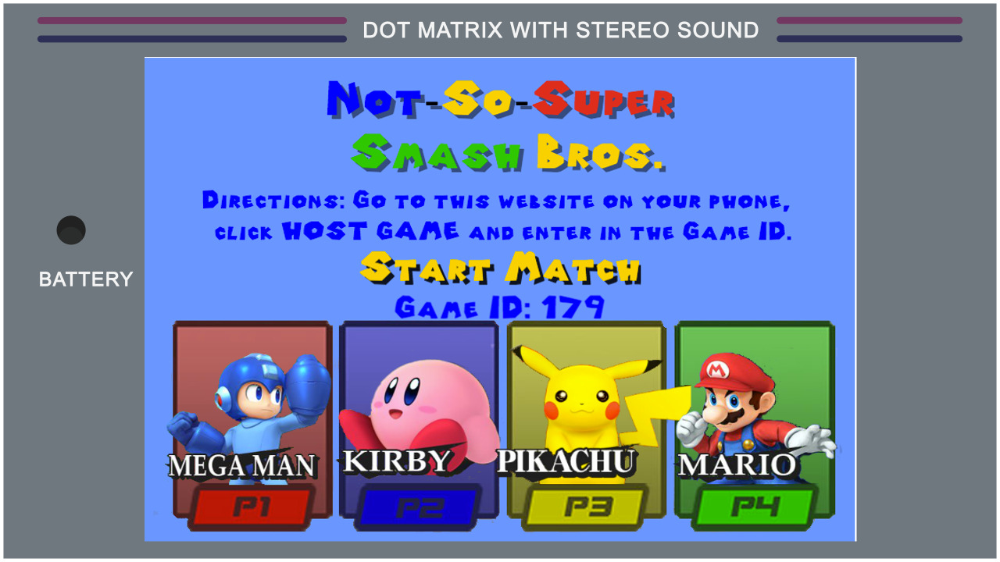
Multiplayer game(up to 4 players) that mocks Nintendo's Super Smash Brothers only with your phone as your game controller. Written in Canvas, Express, JavaScript, and Sockets.
Skills
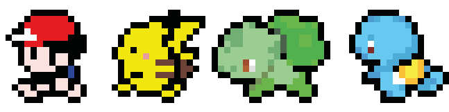________________________________________________
Git || Github || Bootstrap || JQuery || Node.JS || MongoDB
Express || SQL || Java || SASS
Other Skills
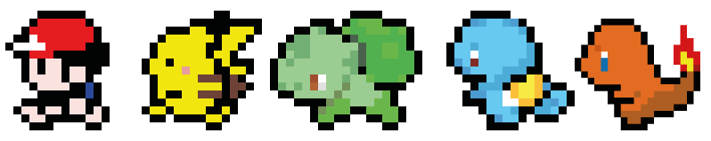____________________________________________
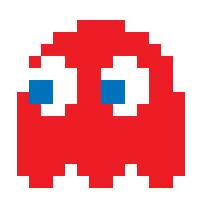
Some other skills that I bring to the table include a strong sense of
design with experience in both Photoshop, Krita and Final Cut Pro. I also have a strong marketing background
(both offline and online) in which I've helped design several different marketing plans for a wide
range of non-profit organizations. Please refer to my
resume or linkedIn for more details.
Creative || Marketer || Advertiser || Designer
Contact
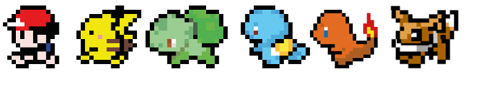______________________________________
I love getting to know new people and talking about anything from code to video games. Please feel
free to contact me any time!
You Can Contact Me Here:
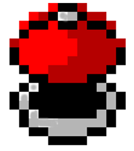